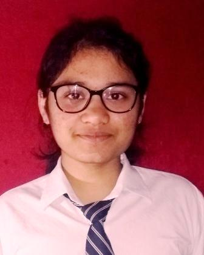

|  |
Nikita Aggarwal
Student at IGDTUW, Delhi
Currently a Freshman
|
I am an engineering student pursuing B.Tech. in Electronics and Communication engineering at Indira Gandi Delhi Technical University for women. I have a passion for learning new skills and technologies. Currently, I am investing time in exploring various computing technologies.
Education
- INDIRA GANDHI DELHI TECHNICAL UNIVERSITY FOR WOMEN, NEW DELHI- Bachelor of Technology in Electronics and Communication Engineering
- Vice President and Co-founder of Girl Up Aadya- a campus club in the Girl Up campaign chain, an initiative by the UN foundation.
- Student Coordinator at the Training and Placement cell of IGDTUW.
- Coder at Lean In, IGDTUW.
- Student Coordinator for two college fests- Innerve and Taarangana.
- MOUNT CARMEL SCHOOL DWARKA, NEW DELHI- High School Diploma (CBSE)
Skills
| Coding in C/C++ |
⭐⭐⭐ |
MySQL |
⭐⭐⭐ |
HTML |
⭐⭐⭐⭐ |
Microsoft Office |
⭐⭐⭐⭐⭐ |
| Team Management |
⭐⭐⭐⭐ |
Creative writing skills |
⭐⭐⭐⭐ |
Verbal communication skills |
⭐⭐⭐⭐⭐ |
Leadership Skills |
⭐⭐⭐⭐ |
Languages known
- English
- Hindi
- French